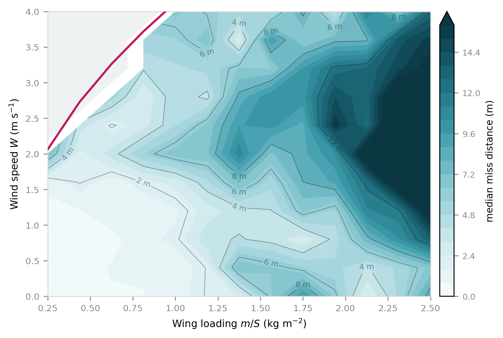

people cut off.
12 districts. No roads.
9 tonnes of food and medicine dropped from helicopters in 10 days — because there was nowhere to land.
If you have to promise targeted drops, the ones you're doing aren't.
Armies do it. It costs a fortune.
A few hobbyists do it cheaply.
So I'm not first, and they measure how well theirs land. I wanted a different answer — not how good is this one, but:
It only makes drag. It can't move by itself, so it goes wherever the air goes. Twenty seconds of falling in a light breeze puts it sixty metres downwind.
A parafoil is a wing. Falling is its engine — it trades height for forward speed, like a bike rolling downhill.
That's the difference. It can move across the river instead of just floating down it. Pull the left string and it turns left — two small motors, that's the whole machine.
Turn left in a fixed circle. Turn right in a fixed circle. Or go straight. There is nothing in between — it can't turn gently.
So every possible route is just those pieces stacked up. And a shortest route never wastes a turn, so it's never more than three pieces.
Three pieces, two turn directions — that's only six routes that can ever win.
I work out all six lengths and take the shortest.
It has no wind sensor. And flying in a straight line, a headwind and simply flying slowly look identical.
Turn, and they come apart.
It's already turning anyway — to burn off spare height.
I make up a situation on the computer — wind 1.6 m/s from the west, drop from 42 metres, target over there.
I know all of it, because I typed it in. But I never show the parachute's software any of it.
It only gets what real parts would give it: a GPS that wobbles, and a compass a few degrees off.
Then I watch where it lands. Give it the answer sheet and the exam means nothing.
Every twentieth of a second it throws away the old plan and works out a new one from where it actually is.
So when the wind pushes it off course, there's nothing to recover — the next answer already includes it.
| What the software knows | Typical miss |
|---|---|
| Nothing | 8.6 m |
| Wind, worked out by itself | 3.9 m |
| The true wind, handed to it | 4.6 m |
It beats being told the true wind — because that doesn't help if your compass is 12° off. Working it out fixes both.
1. To fly against stronger wind, it has to fly faster.
2. To fly faster, it has to be heavier.
3. Heavier and faster means it turns in a much wider circle — like a car. Twice the speed, four times the room to turn round.
And a wide turning circle is a floor on accuracy. Two metres off with seconds to go? Your smallest possible correction is a big loop. You can't fix it.

The maths specifies the build. Every number worked out, not guessed.
| Canopy | ≈ 1 m² |
| Payload | 0.5–0.8 kg |
| Drop height | ≈ 20 m |
| Cost | ≈ ₹4,000 |
Phase two — build it and drop it — follows on selection.
That order is deliberate. The maths committed to its numbers first, so the real thing can prove it wrong.
Trajectory Optimisation for a Steerable Airdrop in Unknown Wind
Guiding Packages to a Target for Relief Distribution, with No Wind Sensor on Board